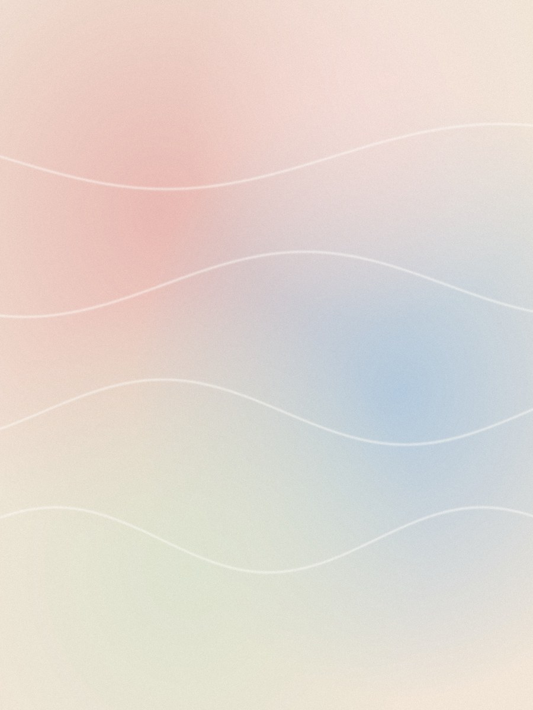
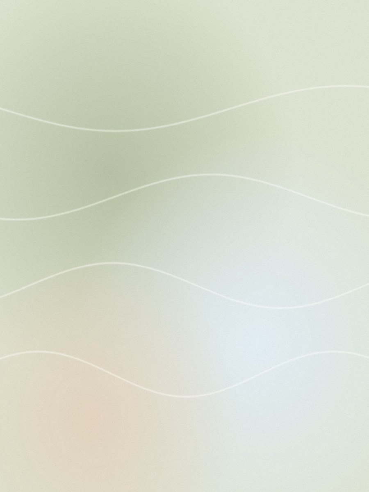
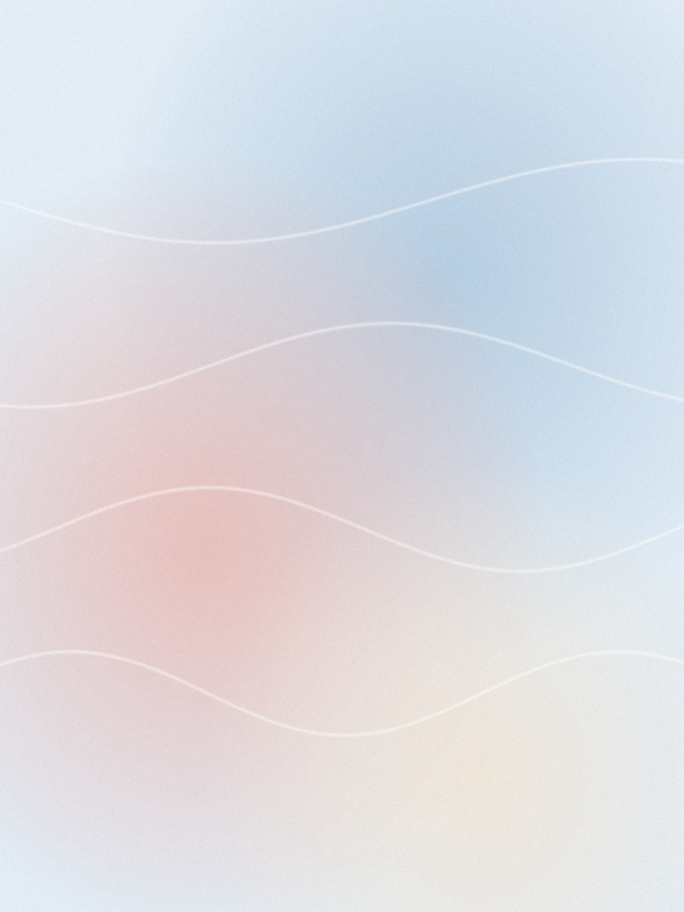

Я Вера, практикующий психолог. Помогаю тем, кто хочет проявляться и слышать себя. Бережно, без оценок и готовых советов, в пространстве, где ваши чувства принимают такими, какие они есть.

«Я постоянно прокручиваю в голове ситуации из прошлого, не замечая, что происходит со мной сейчас»
Тревога · жизнь на автопилоте«Он снова пропал, а я схожу с ума от тревоги. Наверное, меня слишком много»
Отношения · привязанность«Нарядилась, сделала укладку, а выйти страшно: кажется, все смотрят и осуждают»
Страх проявленности«Всё время себя ругаю. Если не могу сделать идеально, лучше не делать вовсе»
Самокритика · перфекционизм«Отношения закончились, а рука всё тянется к телефону»
Расставание · горевание«Злюсь и молчу. Боюсь, что если покажу злость, от меня отвернутся»
Эмоции · границыС этим можно работать. И то, что вы это заметили, уже большой шаг.
Стресс, тревожность, трудно справляться с гневом, виной, стыдом, обидой.
Ощущение опустошённости, потеря интереса к жизни, усталость, которая стала фоном.
Недовольство собой, внутренний критик, трудности с решениями, страх проявляться.
С партнёром, родителями, коллегами. Тревожный и избегающий стиль привязанности
Расставание, переезд, потеря работы. Когда старое закончилось, а новое ещё не началось.
Потеря ориентиров, нет ясности в выборе пути, непонятно, чего хочется на самом деле.
Я не ставлю диагнозов и не назначаю лечение. Если понадобится помощь врача, я честно скажу об этом и подскажу, к кому обратиться.
Это подход Фёдора Ефимовича Василюка. Мы исследуем ваши переживания, чтобы найти их глубинный смысл и скрытые ресурсы. Главное здесь в том, чтобы бережно понять, что для вас действительно важно.
«В вас уже есть все ресурсы для нахождения ответов, важно лишь создать условия, чтобы их обнаружить. Моя роль не в постановке диагнозов или готовых решениях, а в том, чтобы с искренним вниманием и бережностью сопровождать вас в этом поиске»Вера
Напишите мне в Telegram или оставьте заявку на сайте. Отвечу и подберём удобное время.
Бесплатные 20 минут: знакомимся, вы смотрите на подход, вместе формулируем запрос и намечаем план.
50 минут онлайн или очно в Москве. Частоту встреч выбираем вместе
Шаг за шагом вы лучше слышите себя и находите собственные, подлинные ответы.
Мы встречаемся раз в неделю в одно и то же время. Сессию нужно оплатить за 24 часа до встречи.
20 минут · онлайн
50 минут · видеосвязь
50 минут · кабинет в Москве
В психотерапевтическом контракте мы договариваемся о времени, оплате и границах нашей работы. Ясные правила дают безопасность и вам, и мне.
Раз в неделю, в один и тот же день и час. Время выбираем на знакомстве. Сессия длится 50 минут и проходит онлайн в Zoom или очно в Москве.
Не позднее чем за сутки. Например, встречу во вторник в 19:00 можно перенести до 19:00 понедельника.
Если встречу пропустила я, она не оплачивается, а следующая стоит на 50% меньше. Если я опоздаю, то добавлю это время к встрече.
Всё сказанное остаётся между нами. Исключение одно: если есть угроза жизни или здоровью, я могу известить ваше доверенное лицо.
Готовность к диалогу. Я не заставляю раскрываться через силу и не тороплю. Если что-то в работе идёт не так, давайте это обсудим.

«Психологу важно учиться постоянно. Это не всегда легко, но чувствовать свой рост безумно приятно»
Профиль «Психологическое консультирование». Очная форма, выпускная работа на «отлично».
«Понимающая психотерапия: практические методы работы с глубинными переживаниями». Год обучения, право на работу в сфере понимающей психотерапии.
Отношения в паре, кризисы партнёров, детско-родительские отношения.
Обсуждаю сложные вопросы работы с опытными коллегами и никогда не называю сведений, по которым можно узнать клиента. Это стандарт этичной практики.
Можно почитать самим. Это хорошее начало знакомства с подходом.
Основа понимающей психотерапии: как человек проживает кризисы и находит в них смысл.
Об авторе → Ф. Е. ВасилюкКак устроена работа терапевта в этом подходе. Журнал «Консультативная психология и психотерапия», где выходят статьи по подходу.
Журнал → Ирвин Ялом«Его работы повлияли на моё становление как психолога и сформировали гуманистический взгляд».
Об авторе → Теория привязанностиТема, с которой ко мне часто приходят: почему одни и те же сценарии повторяются с разными людьми.
Подробнее →Простые техники из моего канала. Помогают, когда мысли разбегаются и накрывает тревога.

Живу и работаю в Москве. Верю, что быть психологом не значит быть идеальным. Это про то, чтобы оставаться живым, настоящим и достаточно смелым, чтобы встречаться со своими «неудобными» чувствами. Именно этот опыт помогает мне лучше понимать вас.
Это нормально. Для этого и нужна бесплатная встреча-знакомство: за 20 минут мы вместе попробуем сформулировать, что с вами сейчас происходит, и наметим шаги.
В понимающей психотерапии я не даю готовых советов. Мы исследуем ваши переживания, чтобы вы услышали себя и нашли собственные ответы. Они работают лучше чужих.
Да. Всё, что вы рассказываете на сессии, остаётся между нами. Это основа этики психолога. Исключение одно: угроза вашей жизни и здоровью или жизни других людей. На супервизиях я обсуждаю работу без сведений, по которым вас можно узнать.
Да, для большинства запросов онлайн так же эффективен. Важно найти тихое место, где вас никто не услышит и не отвлечёт.
Да, не позднее чем за 24 часа до встречи. При более поздней отмене оплачивается 50% стоимости, а при неявке без предупреждения оплачивается вся сессия. Подробнее об этом в разделе «Правила работы».
Зависит от запроса. Иногда хватает нескольких встреч, иногда работа идёт месяцы. Мы регулярно сверяемся, что меняется.
Отвечу лично и подберём время для бесплатного знакомства.